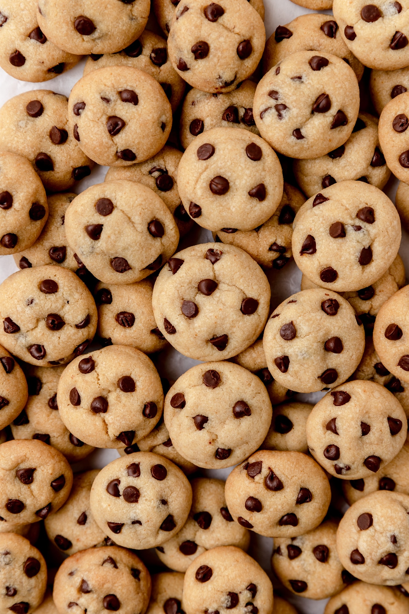

Chocolate Chip Cookies

Let's learn how to make
Chocolate Chip Cookies
Ingredients
- 1/2 cup butter or margarine
- 1/4 cup brown sugar
- 1/4 cup white sugar
- 1/2 tsp vanilla
- 1 egg
- 1 cup + 2 t flour
- 1/2 tsp baking powder
- 1/4 tsp salt
- 3/4 chocolate chips
Instructions
- Preheat oven to 350°F (180°C).
-
In a mixing bowl, cream butter or margarine and sugar with the electric
mixer until mixture is light and fluffy, not chunky.
- Beat in the eggs and the vanilla.
-
Unplug the electric mixer and put the beaters in the dishwater to be
washed.
- Using the wooden spoon, stir in the dry ingredients.
- Add the chocolate chips. Mix well.
- Drop by spoonfuls onto a parchment lined cookie sheet.
- Bake 8-10 minutes.